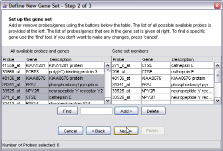

| Home | Download | Help | Pubs | Screens | Versions | Contact |
Screenshots are reduced in size for easier display
ErmineJ includes both a tabular and tree view of the gene sets. In both views, gene sets are color-coded to indicate statistical significance.

Visualizing the raw data for a gene set is easily done:

You can easily modify and create new gene sets in ermineJ
